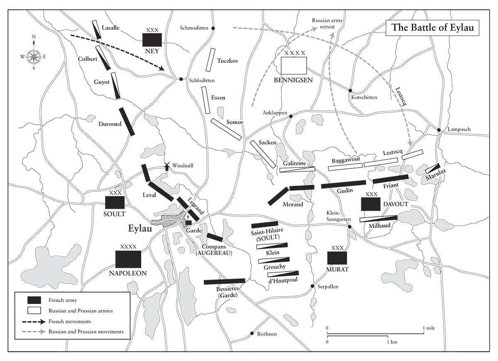

Hoàng đế Napoleon thường được biết đến vì đã tháo chữ thập Binh đoàn Danh dự của mình và tự tay cài nó lên ngực một người can đảm. Louis XIV có lẽ trước hết sẽ hỏi xem người can đảm này có phải là quý tộc. Napoleon hỏi liệu người quý tộc có can đảm.
• Đại úy Elzéar Blaze thuộc Cận vệ Đế chế
Phẩm chất hàng đầu của một người lính là sự vững vàng trước mệt nhọc và thiếu thốn. Dũng cảm chỉ là thứ hai. Nhọc nhằn, nghèo khổ và túng bấn là trường học tốt nhất cho một người lính.
• Tôn chỉ quân sự số 58 của Napoleon
⚝ ✽ ⚝
“Tôi chưa bao giờ thấy có những người bị đánh bại triệt để như thế”, Napoleon nói về người Phổ sau trận Jena. Song Frederick William vẫn không đầu hàng. Thay vì thế, ông ta rút lui về phía đông bắc để tiếp tục chiến đấu, và biết rằng quân Nga đang trên đường tới. Cho dù các cuộc thương lượng đã bắt đầu sau trận đánh giữa Hầu tước Girolamo di Lucchesini, Đại sứ Phổ tại Paris, và Duroc, nhưng chúng không đưa đến kết quả nào. Napoleon có lý khi nghi ngờ Lucchesini là một trong những nhân vật hàng đầu ủng hộ chiến tranh. “Ta nghĩ sẽ thật khó đưa ra một bằng chứng tốt hơn thế về sự ngu ngốc của gã hề này”, ông viết cho Talleyrand.
Trong khi đó, Đại quân tiếp tục bước tiến không ngừng nghỉ qua Phổ, không cho quân Phổ có cơ hội dừng chân tái tổ chức. Spandau đầu hàng Suchet ngày 25 tháng Mười, Stettin đầu hàng Lasalle ngày 29, và thành phố Magdeburg được phòng thủ kiên cố đầu hàng Ney ngày 11 tháng Mười một, những sự kiện này cho phép Pháp làm chủ toàn bộ một nửa miền Tây Phổ. Ngày 7 tháng Mười một, Tướng Gerhard von Blücher, người đã chiến đấu dũng cảm tại Auerstädt, buộc phải đầu hàng với toàn bộ lực lượng của mình ở Lübeck khi ông ta bị cạn kiệt hoàn toàn đạn dược.
Berlin thất thủ nhanh tới mức các chủ cửa hàng không có đủ thời gian để gỡ xuống khỏi khung cửa của họ vô số bức tranh đả kích châm biếm Napoleon. Khi ở Venice, Hoàng đế đã cho gỡ bốn con ngựa và cỗ xe tứ mã chiến thắng có cánh của thành phố xuống khỏi cổng Brandenburg và mang về Paris, trong khi tù binh thuộc Cận vệ Phổ bị giải qua trước Sứ quán Pháp nơi họ đã xấc xược mài kiếm vào tháng trước. Napoleon tới thăm bãi chiến trường Rossbach, nơi người Pháp đã bị Frederick Đại đế làm bẽ mặt năm 1757, và cũng ra lệnh đưa cây cột được dựng tại đó về Paris. “Anh rất khỏe”, ông nhắc lại với Josephine từ Wittenberg ngày 23 tháng Mười, “sự mệt mỏi đã từ bỏ anh”. Thói quen kết thúc rất nhiều lá thư gửi Josephine với những từ “Anh khỏe” (Je me porte bien) của ông, sau này lại trở thành một điều nguy hiểm.
Khi trú tại một căn lều đi săn trong một cơn bão bất ngờ hôm đó, một người vợ góa trẻ nói với ông rằng đã kết hôn với Tiểu đoàn trưởng thuộc Trung đoàn bộ binh 2 bị tử trận tại Aboukir, để lại cô với đứa con trai của họ. Khi được cho xem bằng chứng về sự hợp pháp của đứa trẻ, Napoleon đã dành cho cô khoản trợ cấp hàng năm 1.200 franc, và sẽ được chuyển sang cho con trai khi người mẹ qua đời. Hôm sau, tại Potsdam, ông được cho xem thanh kiếm của Frederick Đại đế, thắt lưng, băng chéo đeo vai và tất cả những vật trang trí tại cung điện Sans Souci (Vô tư) của vị vua này, những thứ mà sau đó Napoleon đã đưa về điện Invalides, như “một sự báo thù nữa cho thảm họa ở Rossbach”. (Ông giữ chiếc đồng hồ báo thức của Frederick Đại đế bên cạnh giường mình trong phần đời còn lại, nhưng không lấy cây sáo của Frederick, nên vẫn có thể thấy nó tại Sans Souci.) “Ta thà có những thứ này còn hơn 20 triệu”, Napoleon nói về các chiến lợi phẩm của mình, và cùng ban tham mưu của mình nhìn chằm chằm vào mộ Frederick, ông khiêm tốn nói thêm: “Hãy bỏ mũ ra, thưa các quý ông. Nếu người này còn sống hẳn ta đã không thể đứng đây vào lúc này.”
Nhưng ở Potsdam, Napoleon thiếu chút nữa đã thực hiện một hành động báo thù nghiêm trọng hơn, khi người ta phát giác ra rằng Vương hầu Franz Ludwig von Hatzfeld, có mặt trong một đoàn đại biểu Phổ từ Berlin, đã viết những lá thư bằng mật mã gửi Hohenlohe báo cáo về quy mô và tình trạng của quân đội Pháp tại đó. Cho dù Berthier, Duroc, Caulaincourt, và Rapp đã cố làm dịu cơn thịnh nộ của Napoleon, nhưng Hoàng đế vẫn muốn xử Hatzfeld như một gián điệp trước tòa án quân sự và xử bắn ông ta. Cái bóng của d’Enghien hẳn đã đè nặng lên Caulaincourt, và Berthier trên thực tế đã bỏ ra khỏi phòng khi Napoleon “mất hết kiên nhẫn” với các cố vấn của mình. Thừa nhận rằng mình đã hành động thái quá, Napoleon đã dàn xếp một màn kịch cảm động trong đó người vợ đang mang thai của Hatzfeld khóc lóc quỳ dưới chân ông cầu xin cho tính mạng chồng. Hoàng đế sau đó đã đại lượng ném những lá thư bằng mật mã bị tịch thu vào lửa, thiêu hủy bằng chứng.
Cùng ngày Davout tiến vào Berlin và Suchet chiếm Spandau, Napoleon viết thư cho Fouché về chi phí phông màn cho vở ba lê Ulysses trở về của Pierre Gardel, và yêu cầu một báo cáo chi tiết “để chắc chắn là trong vở diễn không có gì xấu; tùy ngươi hiểu theo nghĩa nào” (Penelope có những người theo đuổi khi Ulysses ra nước ngoài). Thế nhưng, ít nhiều là đạo đức giả, Napoleon rất sẵn sàng đưa ra sự ám chỉ chống lại Hoàng hậu Louise giống như thứ mà ông sợ bị dùng để ám chỉ mình, khi viết trong một bản thông cáo: “Trong phòng riêng của Hoàng hậu tại Potsdam, bức chân dung Hoàng đế Nga mà ông này tặng cho bà ta đã được tìm thấy.”
Những lời buộc tội rằng Frederick William đã bị phụ nữ dắt mũi trong việc trị quốc được tung ra liên tiếp. “Những thư từ, báo cáo và giấy tờ của nhà nước sặc mùi xạ hương”, bản thông cáo số 19 của chiến dịch được viết tại cung điện Charlottenburg ngày 27 tháng Mười cho biết, “lẫn lộn với những chiếc khăn quàng và các món đồ khác được tìm thấy trên bàn trang điểm của Hoàng hậu”. Để phòng trường hợp còn ai đó không hiểu ý, nó nói rõ rằng “những tài liệu lịch sử… chứng minh, nếu cần phải chứng minh, rằng các ông hoàng thật bất hạnh biết chừng nào khi họ để phụ nữ gây ảnh hưởng tới chính sự”. Ngay cả Bausset tận tụy cũng nghĩ Napoleon đã viết “với sự giận dữ và bất nhã” về Hoàng hậu Louise, và khi Josephine phàn nàn về cách đối xử với Hoàng hậu trong các bản thông cáo của ông, Napoleon thừa nhận: “Đúng là anh căm ghét hơn tất thảy những phụ nữ thao túng người khác. Anh vốn quen với những phụ nữ nhân hậu, dịu dàng và biết cảm thông… song có lẽ vì những phẩm chất đó nhắc nhở anh về em.”
•••
“Hỡi binh lính”, Napoleon tuyên bố từ Potsdam vào ngày 26 tháng Mười, “người Nga huênh hoang rằng đang tìm tới chúng ta. Chúng ta sẽ hành quân tới gặp họ, và như vậy giúp họ bớt được nửa hành trình. Họ sẽ tìm thấy một Austerlitz nữa giữa trái tim Phổ”. Đây không phải là điều quân đội muốn nghe. Giờ đây, khi thủ đô Phổ đã thất thủ, họ muốn trở về nhà.
Napoleon tiến vào Berlin ngày 27 trong một lễ khải hoàn hoành tráng, dẫn đầu 20.000 lính thủ pháo và giáp kỵ trong bộ lễ phục của họ. “Hoàng đế di chuyển đầy kiêu hãnh trong bộ trang phục giản dị với chiếc mũ nhỏ gài phù hiệu giá một xu”, Đại úy Coignet nhớ lại. “Ban tham mưu của ngài mặc lễ phục, và đó là một cảnh tượng thú vị khi thấy người mặc xuề xòa nhất lại là chủ nhân của một đạo quân huy hoàng đến thế”. Năm 1840, khi viết cho Hoàng hậu tương lai Eugénie, Stendhal nhớ lại Napoleon “cưỡi ngựa đi trước binh lính của mình hai chục bước; đám đông im lặng chỉ cách con ngựa của ngài có hai bước; ngài có thể bị bắn hạ bởi một khẩu súng hỏa mai từ bất cứ cửa sổ nào”. Ông vào ở tại cung điện Charlottenburg rộng lớn theo phong cách Rococo của Frederick William tại Berlin, nơi trở thành bản doanh của ông. Những khoản chi tiêu từ ngân khố của Napoleon ghi lại đã có khoảng 23.300 franc được đưa cho một phụ nữ vào thời gian này, người chỉ được mô tả là “một người Berlin”. Ngày 30 tháng Mười, Napoleon đề xuất hòa bình trên cơ sở Phổ từ bỏ tất cả lãnh thổ của mình ở phía tây sông Elbe, điều mà Frederick William sẵn sàng làm, nhưng khi ông thêm rằng cả vương quốc cũng phải trở thành căn cứ tác chiến cho mình trong cuộc xung đột sắp tới với Nga, nhà vua tảng lờ lời khuyên từ đa số triều thần của mình và tiếp tục chiến đấu, rút lui về Königsberg (ngày nay là Kaliningrad) trên bờ biển Baltic.
Pháp cung cấp cho Napoleon khoảng 80.000 lính quân dịch mỗi năm, và nhiều người trong lứa gọi quân dịch năm 1806 giờ đây đang trên đường tới Phổ. Số này cùng 80.000 quân ông đã có sẵn trên chiến trường – chưa bao gồm các lực lượng đồn trú tại những thành phố Phổ bị chiếm – và nhiều đạo quân khác từ Liên bang sông Rhine, đồng nghĩa với việc tới tháng Mười một năm 1806 Napoleon có thể vượt sông Vistula tiến vào vùng lãnh thổ không lâu trước đó là Ba Lan, và ông có thể làm được vậy với lực lượng mạnh trước khi mùa đông khép lại chiến dịch. Ba Lan đã là một quốc gia châu Âu từ năm 966, một vương quốc từ năm 1205 và là một phần của khối thịnh vượng chung với Lithuania sau Liên minh Lublin năm 1569. Quốc gia này dần dần bị xóa khỏi bản đồ khi nó bị chia sẻ vào các năm 1772, 1793, và 1795 giữa Nga, Phổ, và Áo, nhưng cho dù không còn tồn tại như một quốc gia, không việc làm nào của ba cường quốc tham gia phân chia nó lại có thể hủy hoại tinh thần quốc gia của người Ba Lan. Tinh thần này được Napoleon liên tục cổ vũ, cho phép người Ba Lan tin rằng đến một ngày ông sẽ khôi phục lại đất nước của họ. Có lẽ cuối cùng ông sẽ làm thế, song ông không hề có kế hoạch nào cho việc này trong ngắn hạn. Kể từ năm 1797, khi quân đội cách mạng Pháp thành lập “Binh đoàn Ba Lan”, khoảng 25.000 đến 30.000 người Ba Lan đã phục vụ trong hai chiến dịch ở Italy, Đức, và Saint-Domingue. Bề ngoài có cảm tình của Napoleon với sự nghiệp mà họ theo đuổi đã thúc đẩy nhiều người Ba Lan hơn thế gia nhập dưới quyền ông, và một số đơn vị tinh nhuệ nhất của Napoleon là người Ba Lan – bao gồm những đơn vị kỵ binh dùng thương đầu tiên trong Đại quân, lực lượng đã chứng tỏ tính hiệu quả tới mức đến năm 1812 ông đã chuyển chín trung đoàn long kỵ thành các trung đoàn kỵ binh dùng thương.
Ngựa được thu gom từ khắp Pháp và Đức cho chiến dịch sắp tới, còn Đạo quân Italy bị lấy hết kỵ binh để chuyển cho Đại quân. Napoleon trưng thu quân phục, lương thực, yên ngựa, giày, và các thứ khác từ Phổ, nhưng tình trạng hiện tại của các tuyến đường tại Phổ đồng nghĩa với việc sẽ liên tục thiếu thốn về hậu cần. Nỗi lo muôn thuở về giày ủng cho binh lính khiến ông viết 23 lá thư về giày và ủng chỉ riêng trong tháng Mười một và Mười hai, trong đó có một lá thư gửi cho Tướng François Bourcier, phụ trách kho dự trữ của kỵ binh ở Potsdam, lệnh cho kỵ binh Phổ phải giao lại ủng của họ để đổi lấy giày Pháp, giải thích rằng: “Họ sẽ không cần lại ủng của họ nữa, và cần thiết phải…”
Ngày 2 tháng Mười một, Napoleon lệnh cho Davout tiến về phía đông tới Posen cùng quân long kỵ của Beaumont, theo sau là Augereau. Ngay khi đến đó họ thiết lập một căn cứ và xây các lò nướng bánh trước khi các quân đoàn của Lannes, Soult, Bessières, Ney, và Bernadotte theo sau, với tổng cộng xấp xỉ 66.000 bộ binh và 14.400 kỵ binh. Napoleon chiếm vùng lãnh thổ nằm giữa sông Oder và sông Vistula trước hết để không cho người Nga có được chúng, nhưng ông cũng hy vọng ngăn chặn người Phổ tái trỗi dậy và thuyết phục người Áo tiếp tục giữ thế trung lập. Bản thân ông ở lại Berlin. Đến ngày 4, ông biết được rằng 68.000 quân Nga đang hành quân về phía tây từ Grodno với mục tiêu hội cùng 20.000 quân Phổ dưới quyền chỉ huy của Tướng Anton von Lestocq.(*) “Nếu ta để cho người Nga tiến tới, ta sẽ đánh mất sự ủng hộ và các nguồn lực của Ba Lan”, ông nói. “Họ có thể quyết định thái độ của Áo, quốc gia do dự chỉ vì họ ở quá xa; họ sẽ kéo theo mình toàn bộ đất nước Phổ”. Murat, Davout, Lannes, và Augereau do đó hành quân về phía sông Vistula để thiết lập các đầu cầu trước khi củng cố những khu trú quân mùa đông của mình ở bờ tây sông. Hành quân 1.600 km về phía đông từ Paris vào một mùa đông giá buốt qua những vùng nghèo nàn, khan hiếm lương thực nhất châu Âu để chống lại hai quốc gia thù địch, cùng với một quốc gia thù địch tiềm tàng thứ ba ở phía nam luôn là một sự mạo hiểm lớn, cho dù không tệ hơn so với chiến dịch Austerlitz trước đó đã từng.
Gần như tất cả chiến sự trong giai đoạn kế tiếp của chiến dịch diễn ra trong nội địa Đông Phổ, trước đây là lãnh thổ Ba Lan, ở vùng đất ngày nay là Kaliningrad thuộc Nga rộng hơn 15.000 km². Phần lớn vùng này là một đồng bằng bằng phẳng, lầy lội với nhiều sông, hồ và rừng. Vào mùa đông, nhiệt độ giảm xuống –30 độ C và ngày chỉ kéo dài từ 7:30 sáng tới 4:30 chiều. Các tuyến đường thường chỉ là những lối mòn không được vẽ trên các bản đồ; thậm chí cả tuyến đường chính từ Warsaw tới Posen cũng không được rải đá và không có các rãnh thoát nước bên đường. Những cơn mưa lớn biến toàn bộ vùng nông thôn thành những đại dương lầy lội, ở đó đại bác chỉ có thể di chuyển được 400 m mỗi giờ. Napoleon nói đùa rằng ông đã khám phá ra một yếu tố thứ năm để bổ sung vào nước, lửa, không khí và đất: bùn! Ông phái các toán trinh sát của mình đi trước để vẽ bản đồ và địa hình vùng nông thôn, ghi lại tên từng ngôi làng, dân số các làng và thậm chí cả chất đất, tất cả đều được ghi lại bên cạnh chữ ký của sĩ quan phụ trách để ông có thể triệu tập người này tới tìm hiểu thêm chi tiết sau này.
•••
Ngay cả khi ông chuẩn bị đối đầu với người Nga một lần nữa, ý nghĩ của Napoleon vẫn hướng về Anh, quốc gia được ông nhìn nhận như một mối đe dọa cũng nghiêm trọng tương đương với lợi ích lâu dài của Pháp. Vào Thứ sáu, 21 tháng Mười một năm 1806, ông phê chuẩn các Sắc lệnh Berlin thành luật. Các sắc lệnh này được soạn thảo nhằm buộc Anh phải ngồi vào bàn đàm phán, song thay vì thế lại dẫn tới sự sụp đổ của chính ông – khi ông tìm cách dùng vũ lực áp đặt chúng lên Bồ Đào Nha, Tây Ban Nha, và Nga. “Hệ thống Lục địa” được thiết lập bởi các Sắc lệnh Berlin (cùng các Sắc lệnh Milan và Fontainebleau kế tục chúng vào các năm 1807 và 1810) là thứ được Napoleon gọi là “một sự trả đũa” chống lại Lệnh Hội đồng của Anh ngày 16 tháng Năm năm 1806, áp đặt sự phong tỏa bờ biển châu Âu từ Brest tới Elbe. “Bởi Anh không thừa nhận luật pháp của các nước được mọi dân tộc văn minh tuân theo”, các Sắc lệnh Berlin mở đầu, ngụ ý rằng các đối thủ của nước này “có quyền đương nhiên đối phó lại với kẻ thù bằng chính vũ khí kẻ thù sử dụng”. Vì thế các điều khoản, được Talleyrand viết đi sửa lại, đều không khoan nhượng:
⚝ ✽ ⚝
Vì một phần ba xuất khẩu trực tiếp và ba phần tư tái xuất khẩu của Anh đều vào châu Âu lục địa, nên Napoleon dự định sử dụng các sắc lệnh để tạo ra một áp lực chính trị lớn lên Chính phủ Anh nhằm tái khởi động các cuộc đàm phán hòa bình đã bị đổ vỡ từ tháng Tám. Viết thư cho Louis vào tháng Mười hai, ông giải thích: “Ta sẽ chinh phục biển bằng mãnh lực của đất liền”. Sau đó ông viết thêm: “Đó là cách duy nhất để giáng một đòn vào Anh và buộc nó phải đàm phán hòa bình”. Đúng là thế; kể từ khi hạm đội Pháp bị tiêu diệt ở Trafalgar, không còn cách nào để gây tổn hại trực tiếp cho Anh ngoài việc thông qua thương mại.
Cho dù Napoleon tin rằng các Sắc lệnh Berlin sẽ có được sự ủng hộ từ giới thương gia Pháp, những người mà ông hy vọng sẽ chớp lấy những hoạt động thương mại vốn trước đó hướng tới Anh, nhưng ông đã sớm bị thất vọng bởi những báo cáo từ các phòng thương mại của mình. Ngay từ tháng Mười hai, Phòng Thương mại Bordeaux đã báo cáo sự suy giảm rất đáng lo ngại trong kinh doanh. Thương mại quốc tế đơn giản không phải là trò chơi tổng bằng không, như Napoleon với quan điểm thô sơ theo trường phái Colbert vẫn nghĩ. Đến tháng Ba năm 1807, ông đã phải phê chuẩn những khoản vay đặc biệt cho ngành kỹ nghệ từ các quỹ dự phòng nhằm bù đắp khủng hoảng do cuộc phong tỏa gây ra.
Cho dù những bài báo nhiệt thành nhất trên tờ báo Anh Edinburg Review thân đảng Whig rất có ảnh hưởng (ngoại trừ những bài chỉ trích thơ của Wordsworth) kêu gọi hòa bình để cho phép thương mại được bình thường hóa trở lại, nhưng chính quyền Anh đã thành công trong việc vượt qua những chỉ trích nội bộ. Ngược lại, Hệ thống Lục địa đã gây tổn hại cho chính những người trước đó thành công nhờ chính thể Napoleon và cho tới lúc đó vẫn là những người ủng hộ ông mạnh mẽ nhất: tầng lớp trung lưu, thương gia, lái buôn và phú nông, những người mua lại các tài sản sung công được nhà nước phát mại mà ông luôn tìm cách giúp đỡ. “Các chủ cửa hàng ở mọi quốc gia đều phàn nàn về tình trạng làm ăn”, Bộ trưởng Ngân khố Mollien nhớ lại, song Napoleon chẳng có tâm trạng để lắng nghe, nói gì tới thỏa hiệp.
Ngày 7 tháng Một năm 1807, Anh trả đũa bằng các Sắc lệnh Hội đồng khác, “cho phép bắt giữ tất cả tàu trung lập hoạt động thương mại từ một cảng thù địch ở châu Âu tới một cảng khác… cấm hoạt động thương mại bờ biển của kẻ thù tới các nước trung lập”. Sau đó, vào tháng Mười một, lại thêm những Sắc lệnh quy định rằng Pháp và tất cả các quốc gia quy thuận nó đều ở trong tình trạng bị phong tỏa, và tất cả tàu trung lập định tới hoặc từ Pháp trước hết phải qua Anh, đóng thuế tại đó và nhận giấy thông hành. Do đó tất cả hoạt động giao thương của Mỹ với Pháp đều bị phong tỏa, trừ khi tàu Mỹ mua giấy phép tại một cảng Anh với mức phí cao đáng kể. Cùng với thông lệ của người Anh “cưỡng bách” (tức bắt cóc) hàng nghìn người Mỹ phục vụ trong Hải quân Hoàng gia Anh, các Sắc lệnh Hội đồng tháng Mười một năm 1807 là nguyên nhân chính gây ra Chiến tranh 1812 giữa Anh và Mỹ.
Một vấn đề căn bản là nó không thể áp đặt triệt để với Hệ thống Lục địa. Chẳng hạn vào năm 1807, vì Hamburg và các thành phố thuộc Liên minh Hansa như Lübeck, Lüneberg, Rostock, Stralsund, và Bremen không thể sản xuất được 200.000 đôi giày, 50.000 áo khoác, 37.000 áo vest và những mặt hàng khác mà Đại quân đòi hỏi, thống đốc các nơi này đã buộc phải mua chúng từ các nhà sản xuất Anh theo các giấy phép đặc biệt cho phép họ vượt qua lệnh phong tỏa. Nhiều binh lính của Napoleon trong những trận đánh ở chiến dịch Ba Lan sắp tới đã mặc quân phục sản xuất tại Halifax hay Leeds, còn các bộ trưởng Anh tuyên bố tại Hạ viện rằng Napoleon thậm chí chẳng thể cung cấp được quân hiệu khâu lên quân phục các sĩ quan, trừ phi dựa vào nguồn từ các nhà sản xuất Anh.
Ở một số vùng của Đế chế, Hệ thống Lục địa đã gây ra sự suy thoái thực sự, vì nó làm mất cân bằng, gây tổn hại và có trường hợp hủy hoại hoàn toàn các ngành sản xuất công nghiệp. Đã xảy ra những bất ổn nghiêm trọng tại Đại công quốc Berg, và đã phải điều hai bán lữ đoàn tới Mainz để tịch thu toàn bộ hàng hóa của Anh và các thuộc địa. Thực phẩm vốn được dành cho các nhà bếp trên khắp châu Âu bị đốt công khai, và những phần lãnh thổ Đức nằm gần Pháp nhất lại chịu ảnh hưởng nặng nề hơn Anh. Những sắc lệnh bảo hộ của Napoleon dẫn tới những đống lửa lớn đốt hàng hóa Anh bị tịch thu trên các bãi biển ở Dieppe và Honfleur.
Một vấn đề khác là việc phá hoại ngấm ngầm Hệ thống diễn ra rộng khắp, thậm chí bởi cả gia đình hoàng gia. Louis đã nhắm mắt làm ngơ cho hoạt động buôn lậu ở Hà Lan, Murat không thể áp đặt triệt để Hệ thống khi trở thành vua của Naples, và ngay cả Josephine vẫn mua hàng buôn lậu ngoài chợ đen. Kể cả Rapp, một người cực kỳ trung thành, cũng cho phép hoạt động buôn lậu diễn ra tại Danzig khi ông ta trở thành Thống đốc ở đây năm 1807, và từ chối đốt hàng hóa. “Không được nhập bất cứ loại hàng cấm nào nếu không có lệnh của ta”, một Napoleon đang thịnh nộ nói với Bộ trưởng Tài chính của mình, Gaudin, “và ta sẽ bị bỏ rơi hoàn toàn nếu cho phép bất cứ vi phạm nào có liên quan gần gũi đến vậy với gia đình ta. Ở đâu có luật, ở đó mọi người phải tuân thủ”. Ông bãi chức Bourrienne vào năm 1810 – vì ông này, trên cương vị Thống đốc Hamburg, đã nhận hối lộ từ các lái buôn để nới lỏng các biện pháp cấm đoán của Hệ thống – và truất ngôi Louis cùng năm để làm gương, song sự vi phạm vẫn tiếp tục mà hoàn toàn không giảm bớt.
Cho dù Napoleon không ngây thơ tới mức tin rằng hoạt động buôn lậu có thể loại bỏ được hoàn toàn, nhưng ông đã nỗ lực rất nhiều để tiêu diệt nó, chẳng hạn như bố trí 300 nhân viên hải quan dọc theo sông Elbe vào năm 1806. Nhưng Anh còn thực hiện những nỗ lực lớn hơn thế để tạo điều kiện thuận lợi cho hoạt động buôn lậu, như tổ chức một chiến dịch quy mô lớn nơi hòn đảo Heligoland trên biển Baltic. Đến năm 1811, có 840 tàu thực hiện việc trao đổi thương mại, thường diễn ra vào ban đêm, giữa Malta và các cảng phía nam Địa Trung Hải. Sau khi lên bờ, cà phê và đường được đưa lậu qua biên giới bất chấp hình phạt khổ sai 10 năm cùng với việc đóng sắt nung đỏ lên người, và sau năm 1808 án tử hình được áp dụng với những trường hợp tái phạm. (Anh đã áp dụng án tử hình cho tội buôn lậu từ năm 1736, và nó thường xuyên được dùng tới.)
Hải quân Pháp bị phong tỏa nên không thể hy vọng kiểm soát được đường bờ biển châu Âu, và Lisbon, Trieste, Athens, Scandinavia, quần đảo Balearic, Gibralta, Livorno, quần đảo Ionia, và St Petersburg đều là những địa điểm mà tại đó vào các thời điểm khác nhau và với khối lượng khác nhau, hàng hóa Anh có thể thâm nhập vào lục địa một cách công khai hay ngấm ngầm. Khi các nhân viên hải quan Pháp bắt được hàng buôn lậu, một phần của số hàng thường được đem ra để hối lộ, và theo thời gian người ta có thể lấy được những khoản bảo hiểm cho trường hợp bị tịch thu hàng từ hãng Lloyd’s tại London. Trong khi đó, nguồn thu của hải quan đế chế suy giảm nghiêm trọng từ 51 triệu franc năm 1806 xuống 11,5 triệu vào năm 1809, khi Napoleon cho phép xuất khẩu lương thực tới Anh với giá cao lúc mùa màng ở nước này thất bát – khoảng 74% tổng lượng lúa mì nhập khẩu của Anh năm đó đến từ Pháp – nhằm làm suy giảm dự trữ vàng của Anh.(*) Hệ thống Lục địa đã thất bại vì các thương gia tiếp tục chấp nhận tín phiếu Anh, nên London vẫn tiếp tục chứng kiến dòng vốn đổ vào tăng lên. Napoleon thất vọng nhiều hơn khi tiền tệ Anh giảm giá 15% so với các đồng tiền châu Âu trong thời gian từ năm 1808 đến 1810 khiến hàng xuất khẩu của Anh rẻ hơn. Hệ thống Lục địa cũng buộc thương gia Anh phải trở nên linh hoạt và đa dạng hơn, đầu tư ở châu Á, châu Phi, Cận Đông và Mỹ Latin nhiều hơn so với trước đó, khiến cho giá trị xuất khẩu vốn ở mức trung bình 25,4 triệu bảng mỗi năm trong giai đoạn từ năm 1800 đến 1809 tăng lên tới 35 triệu bảng trong giai đoạn từ năm 1810 đến 1819. Ngược lại, tổng giá trị nhập khẩu giảm xuống đáng kể, vì thế cán cân thương mại của Anh trở thành xuất siêu, điều chưa từng có kể từ năm 1780.
Napoleon từng hy vọng, bằng cách ngăn cấm người tiêu dùng lục địa mua sản phẩm của Anh, có thể kích thích sản xuất của châu Âu, nhất là Pháp, và cổ vũ các nhà sản xuất khai thác các nguồn thay thế. Khi người ta khám phá ra vào năm 1810 rằng củ cải đường và cây tràm có thể được trồng tại Pháp, ông nói với thư ký của mình rằng điều đó cũng giống như khám phá ra châu Mỹ lần thứ hai. Một trường thực nghiệm được thành lập tại Saint-Denis để dạy cách chế biến đường, và vào tháng Ba năm 1808, Napoleon yêu cầu Berthollet nghiên cứu xem “liệu có thể sản xuất được đường chất lượng tốt từ củ cải hay không”. Tuy nhiên, ông đã không thuyết phục nổi người dân uống trà Thụy Sĩ thay cà phê, chứ chưa nói gì tới nước rau diếp xoăn, và các kế hoạch sản xuất sợi bông từ cây kế của ông năm 1810 cũng chẳng đi đến đâu.
Nếu như Anh chỉ đơn thuần là “một quốc gia của các chủ cửa hàng”, thì sự suy giảm kinh tế trong các năm tài khóa 1810 và 1811 được quy cho Hệ thống Lục địa vì đã có thể khuấy động lên những bất ổn chính trị cho chính quyền, song Nội các được cấu thành phần lớn từ các đồng nghiệp cũ xuất thân thượng lưu của William Pitt – thực tế là Chính phủ của Công tước xứ Portland trong giai đoạn 1807 đến 1809 đã cùng nhau từ bỏ các danh xưng “Whig” và “Tory” và chỉ tự gọi mình là “những người bạn của ông Pitt” – những người đặt sự ủng hộ của họ cho cuộc chiến tranh chống lại Napoleon trên mọi cân nhắc về thương mại. Spencer Perceval, người kế nhiệm Portland làm Thủ tướng vào tháng Mười năm 1809, bị ám ảnh nặng nề về vấn đề này. Ông ta đã nói với người em rể Thomas Walpole rằng có thể nhận ra Napoleon trong Sách Khải huyền là “người đàn bà cưỡi trên con quái vật, kẻ uống máu các vị thánh, mẹ của những ả điếm”. Khi Napoleon bị chặn đứng ở Acre năm 1799, Perceval đã viết một tập sách ẩn danh với tựa đề thật lôi cuốn Những quan sát nhằm chỉ ra việc áp dụng một lời tiên tri trong chương Mười một của Sách David vào Quyền lực Pháp , trong đó tìm cách lập luận rằng Kinh Thánh đã tiên đoán trước sự thất bại của Napoleon. (Những tính toán chi li từ Kinh Thánh của Perceval cũng thuyết phục ông ta rằng thế giới sẽ kết thúc vào năm 1926.) Với việc các chính trị gia Anh bị ám ảnh bởi niềm tin kiên quyết cự lại lý trí như thế, thật khó thấy Napoleon có thể bằng cách nào đó thuyết phục được Anh thương lượng hòa bình sau cái chết của Fox. Vào năm 1812, khi Perceval bị ám sát bởi một kẻ tâm trí còn bất thường hơn cả ông ta, vị trí thủ tướng của ông ta được kế nhiệm bởi một môn đệ khác của Pitt, Huân tước Liverpool (trước đó là Bộ trưởng Ngoại giao – Huân tước Hawkesbury), người cũng nhiệt thành tương tự với việc tiêu diệt Napoleon và sẽ còn tại vị tới tận năm 1827.
•••
Vào 3 giờ sáng 25 tháng Mười một năm 1806, Napoleon rời Berlin để thực hiện một chuyến thị sát mặt trận Ba Lan, và mời Josephine hiện đang ở Mainz đi về phía đông để tới ở cùng ông, một đề xuất sau này ông sẽ hối hận. Ông tới thành phố Posen ở Ba Lan vào tối 27 và nhận được sự chào đón nhiệt thành từ cư dân, những người ông đã khơi dậy hy vọng về một quốc gia song tránh đưa ra bất cứ cam kết nào để hiện thực hóa. “Đáng lẽ ta đã không nên vượt qua sông Vistula”, sau này ông nói tại một trong nhiều dịp thừa nhận những sai lầm của mình. “Chính việc chiếm Magdeburg đã dẫn tôi tới chỗ tiến vào Ba Lan. Tôi đã sai lầm. Nó đã dẫn tới những cuộc chiến khủng khiếp. Nhưng ý tưởng tái lập Ba Lan là một ý tưởng cao đẹp”. Trước những cha cố của thành phố đang cầu khẩn việc tái lập vương quốc của họ, ông lựa chọn từ ngữ một cách thận trọng: “Những bài diễn văn và mong ước sáo rỗng là không đủ… Những gì sức mạnh đã hất đổ chỉ sức mạnh mới phục hồi được… những gì đã bị hủy hoại bởi sự thiếu đoàn kết thì chỉ sự đoàn kết mới tái lập được”. Nghe có vẻ tích cực và thượng võ, song nó còn cách rất xa một lời hứa về việc tái lập Ba Lan như một quốc gia-dân tộc.
Ngày hôm sau, Bá tước Levin von Bennigsen, vị tư lệnh sinh ra tại Hanover của quân đội Nga, rút lui khỏi Warsaw và dừng lại cách đó 64 km về phía bắc, gần Pultusk. Murat tiến vào Warsaw tối hôm đó, tự coi mình như thống đốc. Napoleon không hề bị ép buộc bởi sự đón tiếp nhiệt tình của người Ba Lan để đi tới tước đoạt vĩnh viễn từ ba quốc gia đã chia tách và xóa sổ Ba Lan với những phần lãnh thổ rộng lớn mà họ đã giành được năm 1795. “Hiểu về con người ư, ta đã quá lão luyện rồi”, ông nói với Murat ngày 2 tháng Mười hai. “Sự vĩ đại của ta không dựa vào sự giúp đỡ của vài nghìn người Ba Lan… Ta sẽ không phải là người đi bước đầu tiên”. Còn về Viên tướng-Hoàng thân Józef Poniatowski, người cháu thân Pháp của vị vua Ba Lan cuối cùng, Napoleon nói: “Ông ta phù phiếm và nhẹ cân hơn phần lớn người Ba Lan, và điều đó cũng đã nói lên khá nhiều”. Napoleon muốn Murat truyền đạt tới người Ba Lan rằng “không phải ta đang cầu xin ngôi báu cho một thành viên của gia đình ta; ta không thiếu gì ngôi báu để ban cho họ.”
•••
Đại quân căm ghét cuộc sống bên sông Vistula, và chỉ thấy phía trước “thiếu thốn và thời tiết xấu”. Một trong những câu đùa trong quân đội là toàn bộ tiếng Ba Lan có thể được thu gọn thành năm từ – “Chleba? Nie ma. Woda? Zaraz!” (“Bánh mì? Không có. Nước? Có ngay!”) – vì thế khi một người lính bộ binh trong đội hình hàng dọc gần Nasielsk kêu to với Napoleon: “Papa, Chleba? ”, ông lập tức đáp lại “Nie ma” vậy là cả đội hình hàng dọc cùng phá lên cười. Trong cơn bão khi đạo quân chưa kịp tới khu vực trú quân mùa đông của mình, một người lính khác gào lên: “Ngài bị cái gì đập vào đầu rồi hay sao mà lại dẫn chúng tôi đi trên con đường không có bánh mì thế này?” Napoleon trả lời: “Kiên nhẫn thêm bốn ngày nữa, và ta sẽ không đòi hỏi các anh điều gì nữa. Khi đó các anh sẽ được đóng quân”. Người lính liền gào lại: “Được, thế cũng không quá nhiều, nhưng nhớ đấy, bởi vì sau đó chúng tôi sẽ tự đóng quân”. Những người lính cận vệ đã thực sự bất bình – có những lúc họ bị đẩy tới chỗ phải uống máu ngựa trong nồi trên đường hành quân – nhưng Savary nhớ lại về giai đoạn này của chiến dịch: “Ông ấy yêu quý những người lính nói chuyện vô tư với mình, và luôn cười đùa cùng họ.”
Trước một lá thư của Josephine nói rằng bà không ghen với việc ông ở bên các phụ nữ Ba Lan trong những buổi tối của mình, Napoleon trả lời vào ngày 5 tháng Mười hai:
⚝ ✽ ⚝
Tuần tiếp theo, ông giành được một thành công đáng kể khi Tuyển hầu Frederick Augustus xứ Saxony, từng chiến đấu bên cạnh người Phổ tại Jena và Auerstädt, từ bỏ liên minh của ông ta với Frederick William và gia nhập Liên bang sông Rhine. Napoleon tới Warsaw và được đón tiếp nhiệt tình vào ngày 19 tháng Mười hai. Ông lập tức thành lập một chính phủ lâm thời của giới quý tộc Ba Lan, cho dù với quyền lực không vượt quá vai trò tư vấn bao nhiêu. Ông dự đoán rằng người Nga sẽ không rút lui xa hơn nữa và đã sẵn sàng chiến đấu, vì thế ông ra lệnh cho tất cả các quân đoàn của mình vượt sông Vistula. Hy vọng xâm nhập vào khe hở giữa các viên tướng Nga gốc Đức Bennigsen và Büxhowden, ông thông báo cho tư lệnh các quân đoàn chuẩn bị cho một cuộc tấn công tổng lực sẽ sớm diễn ra. Khi quân đoàn của Davout tới làng Czarnowo bên bờ sông Bug ngày 23 tháng Mười hai, Napoleon tới thám sát khu vực và tung ra một cuộc tấn công ban đêm thành công, khiến 15.000 quân Nga bị kéo dãn ra dưới quyền Bá tước Alexander Ostermann-Tolstoy(*) phải tháo chạy, và sau trận giao chiến này các tuyến đường thủy ở phía bắc Warsaw đã thuộc về người Pháp.
Vào Lễ Giáng sinh năm 1806, Napoleon tìm cách tiêu diệt đạo quân của Bennigsen khi lực lượng này đang rút lui về phía đông bắc, bằng cách phái Lannes tới Pultusk để cắt đứt đường rút của ông ta, trong khi Davout, Soult và Murat tiến về phía bắc, Augereau tiến về phía đông bắc từ sông Wkra, và Ney cùng Bernadotte tiến về phía đông nam từ sông Vistula. Thời tiết đã phá hỏng cơ hội của ông, làm giảm tốc độ hành quân xuống 11 km một ngày. “Mặt đất chúng tôi hành quân qua là thứ đất sét pha”, Rapp nhớ lại, “xen lẫn với các đầm lầy, các tuyến đường rất tồi, kỵ binh, bộ binh và pháo binh mắc kẹt trong bùn, và họ phải khó nhọc hết mức để rút được chân ra khỏi đó”. Khi trận đánh diễn ra tại Pultusk vào hôm sau, “Nhiều sĩ quan của ta mắc kẹt trong bùn và chôn chân ở đó trong cả trận đánh. Họ trở thành bia cho quân địch ngắm bắn.”
Bennigsen đã thành công trong việc chỉ huy hậu quân trong bão tuyết ở Pultusk với 35.000 quân chống lại quân đoàn của Lannes có 26.000 quân, và rút lui vào hôm sau. Cùng ngày tại Golymin, Công tước Andrei Galitzin chiến đấu tới tận tối trước khi rút gọn lực lượng của mình khỏi một trong những cái bẫy của Napoleon (Murat, Augereau, và Davout dự kiến sẽ tấn công ông ta từ ba phía) – và khi họ gặp nhau ở Tilsit vào tháng Bảy, Napoleon đã chúc mừng Galitzin về cuộc thoát vây của ông ta. Ông tới quan sát chiến trường Golymin vào hôm sau, và người lính-họa sĩ Lejeune thuật lại “Hoàng đế và Vương hầu Berthier đã dừng lại vài phút để nghe chúng tôi hát các giai điệu từ những vở opera mới nhất tại Paris.”
Sau khi rút lui thành công, quân Nga quay về bản doanh mùa đông ở quanh Bialystok, và vào ngày 28 tháng Mười hai, Napoleon đình chỉ chiến sự và đóng quân dọc theo sông Vistula, quay trở lại Warsaw vào ngày đầu năm mới. Ông không có nhiều lựa chọn khi phải tính tới thời tiết xấu, tình trạng kinh khủng của đường xá và thực tế do sốt, thương tật, đói và kiệt sức, 40% đạo quân của ông luôn vắng mặt tại đơn vị, phần lớn phải đi tìm lương thực ở một vùng đất vốn đã rất khó khăn để duy trì sự sống cho bản thân cư dân của nó vào thời bình, chưa nói gì tới cung cấp cho cả hai đạo quân lớn vào thời chiến. Mệnh lệnh được ban bố để xây dựng bệnh viện, nhà xưởng, lò nướng bánh, các kho hậu cần, trong khi các đầu cầu và các doanh trại với công sự phòng thủ được thiết lập, do đó Đại quân sẽ không phải dùng vũ lực để vượt sông vào mùa xuân.
“Chưa bao giờ quân đội Pháp lại thảm hại như thế”, Nam tước Pierre Percy, bác sĩ phẫu thuật trưởng của đạo quân ghi nhận.
⚝ ✽ ⚝
Ước tính tới Giáng sinh, đã có khoảng 100 binh lính tự sát.
Napoleon từ lâu đã hết sức nhấn mạnh tới việc chữa trị, vận chuyển và chăm sóc thương binh, viết chừng 600 lá thư chi tiết về chủ đề này kể từ khi bắt đầu chiến dịch Italy 10 năm trước. Ông thường viết cho các bác sĩ cao cấp của mình, Percy và Dominique Larrey, ca ngợi “lòng dũng cảm, nhiệt huyết, sự tận tâm, và trên hết là sự kiên nhẫn và sức chịu đựng” của bộ phận quân y. Ông thường xuyên đùa cợt các bác sĩ phẫu thuật về các bệnh tật, và hỏi họ y học Pháp có gì khác với y học các nước khác. “Ông đây rồi, lang băm vĩ đại”, Napoleon hay đùa cợt bác sĩ riêng của mình, Jean-Nicolas Corvisart. “Hôm nay ông có giết nhiều người không vậy?” Ông thích và tin tưởng Corvisart, người đã chữa khỏi chứng đau hông của ông và giữ cho ông nhìn chung khỏe mạnh, cho tới khi một loạt những chứng bệnh nhẹ nhưng khó chịu bắt đầu làm phiền ông từ chiến dịch Nga trở về sau. Vào những dịp khác, Napoleon có thể rất nghiệt ngã với các bác sĩ, như khi viết cho Jean-Gérard Lacuée vào tháng Một năm 1812: “Sự thiếu kinh nghiệm của các bác sĩ phẫu thuật còn gây tổn hại cho quân đội nhiều hơn đại bác của kẻ thù.”
Napoleon chỉ đề xuất về việc đưa một đội xe cứu thương vào hoạt động năm 1813, khi việc thiếu nguồn lực đã ngăn nó tạo ra hiệu quả mong đợi. Ông đã tăng số sĩ quan quân y phục vụ trong quân đội Pháp, từ 1.085 người vào năm 1802 lên 5.112 người sau đó một thập kỷ, và số bác sĩ phẫu thuật trên chiến trường từ 515 lên 2.058. Số bác sĩ ít ỏi này đã phải phụ trách số bệnh nhân thực sự khổng lồ trong chiến dịch Ba Lan; từ tháng Mười năm 1806 đến tháng Mười năm 1808, các quân y viện Pháp đã chữa trị cho 421.000 lượt binh lính. Ngay cả khi chiến sự diễn ra khốc liệt nhất vào giai đoạn đó, chưa tới một phần tư số này thực sự bị thương trong chiến đấu; số còn lại bị ốm, hầu hết là sốt.
•••
Ngày 1 tháng Một năm 1807, trên đường từ Pultusk quay về Warsaw, Napoleon thay ngựa tại một trạm bưu điện ở Blonie, và tại đó ông gặp nữ Bá tước xinh đẹp tóc vàng da trắng 20 tuổi người Ba Lan Marie Colonna-Walewska, người mà ông nhanh chóng khám phá ra là đã kết hôn với một lãnh chúa quý tộc hơn cô đến 52 tuổi. Ông thu xếp để gặp lại cô trong một vũ hội, sau đó cô nhanh chóng trở thành nhân tình của ông, người mà ông gắn bó nhất. Một trong những quý bà khác có mặt tại vũ hội, nữ Bá tước Anna Potocka chăm ghi nhật ký và chuyên buôn chuyện vỉa hè, “thấy ông ấy bóp chặt bàn tay cô” khi kết thúc một điệu nhảy, điều được bà ta phỏng đoán là đồng nghĩa với một cuộc hẹn hò. Bà ta nói thêm rằng Marie có một “khuôn mặt ngọt ngào nhưng không có não.”
Napoleon nhanh chóng hủy bỏ lời mời Josephine đến Warsaw với ông. “Có quá nhiều đường xá phải đi lại giữa Mainz và Warsaw”, ông viết cho bà hai ngày sau khi gặp Marie. “Anh có nhiều thứ phải giải quyết tại đây. Anh nghĩ em nên trở về Paris, nơi em được cần tới… Anh khỏe, thời tiết tồi. Anh yêu em bằng cả trái tim”. Trước những lời cầu khẩn sau đó muốn được tới chỗ ông của bà, ông viết: “Anh bực bội với chuyện này hơn cả em; anh những mong được chia sẻ những đêm đông dài này cùng em, nhưng cần tuân theo hoàn cảnh”.(*)
•••
Napoleon tới gặp Rapp ở Warsaw, người đã bị thương lần thứ chín trong trận Golymin, lần này vào cánh tay trái. “Chà, Rapp”, ông nói, “ông lại bị thương rồi, và cũng lại ở cánh tay không may của ông”. Rapp nói với ông rằng cũng không lạ, vì “chúng ta luôn ở giữa các trận đánh”. “Có lẽ chúng ta sẽ thôi chiến đấu khi chúng ta 80 tuổi”, Napoleon đáp. Dấu hiệu này cho thấy ông trông đợi sẽ sống lâu hơn nhiều so với bố mình được thể hiện trong một lá thư gửi Dalberg vào thời kỳ này, trong đó ông viết: “Người ta mới chỉ đi qua hai phần ba cuộc đời khi ở tuổi 60.”
Cho dù Napoleon khá hài lòng khi cho phép người Nga yên ổn qua mùa đông, nhưng Ney lại đang thiếu thốn hậu cần tới mức tuyệt vọng, vậy là hoàn toàn trái với các mệnh lệnh, ông ta bất ngờ tấn công lên phía bắc vào ngày 10 tháng Một, hy vọng chiếm được kho hậu cần lớn tại Königsberg nhờ vào bất ngờ. Đây là kiểu hành động trái lệnh đầy phiêu lưu mà ông ta biết Napoleon sẽ chấp nhận nếu mình thành công. Ông ta tới Heilsberg sau đó một tuần, tại đây ông ta chạm trán quân đoàn Phổ của Lestocq, qua đó phát hiện ra thực tế là Bennigsen cũng đã bắt đầu cuộc tấn công bất ngờ của mình và đang lặng lẽ di chuyển qua rừng Johannisburg rộng 1.300 km² ở phía đông bắc Warsaw.
Các tù binh bị Ney và sau đó là Bernadotte bắt đã cho phép Napoleon hình dung ra toàn cảnh một cuộc tấn công quy mô của kẻ thù đang di chuyển về phía sông Vistula. Ông lập tức nhận ra cơ hội cho một cuộc phản công mang tính tiêu diệt. Với phần lớn đạo quân của mình đang ở phía nam, Napoleon nhìn ra một cách để tấn công tạt sườn, và có thể cả vào sau lưng Bennigsen, vì quân Nga càng tiến xa về phía tây thì càng dễ để quân Pháp cô lập họ. Vì thế, ông quyết định tấn công lên phía bắc 160 km từ Warsaw tới Allenstein trên bờ sông Alle. Thống chế Lefebvre, người đã được đưa ra khỏi danh sách không phục vụ vào năm 1805, được giao một quân đoàn để bao vây Danzig, và được giữ lại Thorn. Augereau sẽ vượt sông Vistula. Bernadotte được lệnh lập một tấm bình phong dọc theo sông Passarge và sẵn sàng vừa đánh vừa lùi qua Elbing nếu cần. Trong khi đó, Napoleon lấy Thorn làm bản lề, xoay toàn bộ đạo quân từ nam lên bắc. Davout trấn giữ sườn đông cho tới khi được Lannes thay thế, rồi quân đoàn của ông ta sẽ hành tiến về phía Ostrolenka và Makow. Đến 19 tháng Một, tiền quân của Napoleon bắt gặp Bennigsen đang di chuyển về phía Danzig. Thời tiết vẫn khắc nghiệt. “Chưa bao giờ một chiến dịch lại gian khổ đến thế”, Tướng pháo binh Alexandre de Sénarmont viết. Đại bác của ông ta lún tới trục bánh xe và pháo thủ của ông ta ngập tới đầu gối trong bùn. Không lâu sau đó mặt đất rắn lại trong sương giá, và lớp tuyết dày vài gang càng làm quân đội bị chậm thêm.
Ngày 27 tháng Một, Đại quân vẫn đang di chuyển lên phía bắc theo nhịp hành quân gấp, trong khi Ney và Bernadotte được lệnh tiếp tục cuộc rút lui về phía tây của họ, qua đó thu hút Bennigsen tiến sâu hơn nữa vào cái bẫy của Napoleon. “Sức khỏe của ta chưa bao giờ tốt hơn”, ông viết cho Joseph, “và kết quả là ta trở nên hào hoa hơn trước đây”. Hiện ông đang mạnh mẽ theo đuổi cuộc tình của mình, dùng cách xưng hô thân mật “tu” để nói chuyện với Marie, cách xưng hô mà ông chỉ dành cho Josephine và Vua Ba Tư: “Ôi! Hãy đến với anh! Hãy đến với anh!” ông viết cho cô, “tất cả mong muốn của em sẽ được đáp ứng. Quê hương em sẽ trở nên thân thương với anh nếu em rủ lòng thương trái tim khốn khổ của anh”. Vài ngày sau, khi gửi một cây trâm hoa cài áo cho cô, ông viết
⚝ ✽ ⚝
Ông cũng hào phóng với cô, dành cho cô 50.000 Franc đưa làm ba lần cho tới tháng Mười năm 1809.(*)
•••
Ngày 31 tháng Một, sau ngày Napoleon rời Warsaw ra mặt trận, lính Cossack thuộc tiền quân của Tướng Nga Bagration bắt được một sĩ quan phụ tá mang thông điệp của Napoleon gửi Bernadotte, viên sĩ quan này đã không kịp hủy các thư từ chưa được mã hóa đi. (Napoleon ra lệnh cho các sĩ quan phụ tá giữ các thư từ bằng cách khâu vào đế ủng của họ; “Một sĩ quan phụ tá có thể đánh mất quần trên đường”, có lần ông châm biếm, “nhưng không bao giờ được đánh mất thư từ hay kiếm của mình”.) Thông điệp lệnh cho Bernadotte hội quân với cánh trái của Đại quân bằng việc bí mật hành quân đêm. Nó cũng chứa đựng thông tin về bố trí của cả Đại quân và thể hiện rõ ý định cô lập toàn bộ đạo quân Nga bằng cách tấn công lên từ phía nam. Bennigsen bình tĩnh ra lệnh rút lui về sông Alle. Không biết là kế hoạch của mình đã bị lộ, Napoleon tiếp tục tiến lên phía bắc, theo những tuyến đường kinh khủng dưới thời tiết khắc nghiệt. Với một vị tư lệnh mà tốc độ luôn là một yếu tố tối quan trọng, mùa đông Ba Lan lại càng gây thất vọng. Ngày 2 tháng Hai, Napoleon biết được thay vì tiến về phía sông Vistula, Bennigsen giờ đây đang rút lui về phía sông Alle, trở lại vị trí an toàn. Ông tiến nhanh nhất có thể tới Bergfried trong nỗ lực kìm chân đối thủ lại trước khi ông ta thoát được. Ông chỉ có bên mình năm sư đoàn bộ binh, Kỵ binh Dự bị của Murat và một phần Cận vệ Đế chế. Hôm sau, Bennigsen vượt sông Alle, chỉ để lại hậu quân để kìm chân quân Pháp. Napoleon đình chỉ cuộc tấn công, và đến hôm sau quân Nga rút đi. “Ta đang truy kích quân Nga”, ông nói với Cambacérès, “và sẽ buộc chúng lùi sang bên kia sông Niemen”.(*)
Khi Murat bắt kịp hậu quân Nga tại cây cầu bắc qua một phụ lưu sông Frisching ở Hof ngày 6 tháng Hai, Tướng Jean-Joseph d’Hautpoul cho quân giáp kỵ của mình xông thẳng vào họng pháo quân Nga, chiếm lấy vị trí. Nửa tiếng sau trước mặt cả sư đoàn, Napoleon ôm lấy người lính kỳ cựu đô con, to mồm và nói năng bỗ bã, sau đó quay sang binh lính của mình và lớn tiếng: “Hoàng đế rất hài lòng với các ngươi, và ta hài lòng với các ngươi tới mức ta hôn mông tất cả các ngươi!” Murat phải chịu 1.400 thương vong tại Hof. Đối thủ của ông, Tướng Michael Barclay de Tolly, một người lai Scotland-Lithuania, mất 2.000 quân Nga, song Bennigsen đã lại thoát đi thành công. Cách duy nhất với Bennigsen để bảo vệ Königsberg nằm cách đó 32 km về phía bắc – nơi ông ta không thể để cho mình bị vây hãm – là giao chiến tại Eylaud (nay là Bagrationovsk), khi đó là một thành phố vùng Đông Phổ với 1.500 dân cư nằm cách biên giới Nga 208 km. Bennigsen có trong tay khoảng 58.000 quân nhưng đang trông đợi Lestocq sắp sửa tới hội quân cùng 5.500 người nữa. Napoleon có 48.000 quân, nhưng còn Ney ở cách đó hơn 19 km về phía đông và Davout ở cách 16 km về phía đông nam đang trên đường tới cùng gần 30.000 quân nữa. Tuy nhiên, người Nga có lợi thế lớn về pháo binh, 336 khẩu so với 200 khẩu của Napoleon.
Tuyến đường chính từ Landsberg tới Königsberg trải dài 14,5 km giữa một đồng bằng và một khu rừng cho tới khi chạy vào một vùng đồng bằng mấp mô cách Eylau chừng 2,5 km, kết thúc ở một khu đất hơi nhô lên. Từ vị trí này, Napoleon có tầm nhìn rõ ràng xuống thung lũng rộng dẫn tới sống núi nhô lên nơi đạo quân Nga đang triển khai. Ở bên trái phía trước ông là hồ Tenknitten, bên phải là hồ Waschkeiten. Trong một khoảng dài chừng hơn 900 m giữa hai hồ nước, mặt đất hơi nhô lên, rõ hơn tại nơi con đường chạy vắt qua, sau đó hạ xuống trong 800 m còn lại tới Eylau qua một vùng hơi trũng. Một nhà thờ cùng nghĩa địa của nó tọa lạc trên một ngọn đồi nhỏ nằm bên phải nơi mà vào năm 1807 là một thành phố với những tòa nhà vững chãi nằm tại một ngã tư đường quan trọng. Có một vài hồ nước và đầm lầy đóng băng cùng khoảnh rừng nằm rải rác gần đó. Trên khoảng đất cao nhô lên giữa đồng bằng là làng Serpallen, nơi tuyết rơi nhiều chỗ dày tới vài gang tay.
Đạo quân của Bennigsen triển khai cho trận đánh vào cuối buổi sáng Thứ bảy, 7 tháng Hai năm 1807. Vào lúc 2 giờ chiều, kỵ binh của Murat cùng các đơn vị bộ binh tiền đội của Soult tiếp cận khu rừng trước làng Grünhofschen. Augereau tiếp tục xuất hiện và triển khai về phía Tenknitten. Soult tung các Trung đoàn bộ binh 18 và 46 vào trận, tấn công hậu quân Nga không được yểm trợ; Trung đoàn 18 vượt qua phía cuối hồ Tenknitten đang đóng băng dưới làn đạn pháo dữ dội, bị đẩy dạt sang phải, và bị tấn công bằng lưỡi lê trong tình thế đang chấn động mạnh. Sau đó, đơn vị long kỵ St Petersburg, mong muốn báo thù sau thất bại của họ tại Hof, đã băng qua mặt hồ đóng băng để tấn công phía sau Trung đoàn 18 từ bên trái, chạm trán và phá vỡ đội hình vuông của cả hai tiểu đoàn, tại đây Trung đoàn 18 để mất con đại bàng của mình.(*) Lính long kỵ Pháp tới nơi kịp thời, phản công và giúp đơn vị này tránh khỏi bị hủy diệt hoàn toàn, song giao chiến diễn ra rất ác liệt. Trung đoàn 46 đã có thể rút lui trong trật tự. Khi Soult triển khai pháo binh của mình giữa Schwehen và Grünhofschen, tiền quân Nga bắt đầu lui về phía chủ lực của đạo quân.
Napoleon lúc này nắm trong tay toàn bộ phần đất cao tới tận thung lũng, song tổn thất của ông rất nặng nề; ba tuần sau vẫn có thể thấy một đống xác chết tại đó. Ông không định tấn công Eylau tối ấy, mà muốn chờ tới lúc Ney và Davout tới, song nhiều biến cố và hiểu lầm được gói lại trong cách nói hữu ích “sương mù chiến tranh” đã buộc ông phải làm thế. Lời giải thích của Soult có lẽ ổn nhất, rằng một phần Kỵ binh Dự bị đã bám theo người Nga vào Eylau, và rằng Trung đoàn bộ binh 24 của ông ta cũng bám theo lực lượng này, vì thế cuộc giao chiến tổng lực giành nhà thờ và nghĩa địa đã bắt đầu, và dĩ nhiên thu hút thêm lực lượng tham chiến khi nó tiến triển. Cho dù nguyên nhân là gì đi nữa, trận đánh giờ đây đã kéo dài hai ngày, với 115.000 người giành giật một diện tích chỉ có 13 km².

Nhà thờ và nghĩa địa bị sư đoàn của Saint-Hilaire tấn công, trong cuộc tấn công này Barclay de Tolly, một trong những tướng lĩnh xuất sắc nhất của quân đội Nga, bị thương nặng vì đạn chùm khiến ông ta phải tạm rời vòng chiến trong 15 tháng. Bagration định triệt thoái khỏi Eylau, nhưng Bennigsen ra lệnh chiếm lại thành phố bằng mọi giá, vì thế ông ta liền đi bộ dẫn đầu ba cánh quân theo đội hình hàng dọc tấn công vào bộ binh và pháo binh đang bắn đạn chùm của Pháp. Đến 6 giờ chiều, quân Nga đã giành lại phần lớn thành phố, cho dù chưa chiếm được nhà thờ và nghĩa địa. Bennigsen sau đó đổi ý, và đến 6:30 chiều ông ta ra lệnh cho quân Nga rút lui khỏi thành phố lên khu đất hơi nhô cao mà các tác giả cùng thời nhắc đến dưới tên gọi “cao điểm” ở phía đông, nhờ đó quân Pháp chiếm được thành phố.
Khi đêm buông xuống, sư đoàn của Legrand vận động lên quá Eylau; Saint-Hilaire cắm trại ngoài khu đất trống gần Rothenen; kỵ binh của Milhaud đóng tại Zehsen; Grouchy ở phía sau Eylau; Augereau chiếm lĩnh tuyến thứ hai giữa Storchnest và Tenknitten, còn Cận vệ Đế chế ngủ đêm trên khu đất cao nơi Bagration đã bắt đầu chiến sự ngày hôm ấy. Khi tuyết rơi, cả hai đạo quân đều xúm lại quanh các đống lửa trại. Vì các xe hậu cần không thể theo kịp quân đội khi hành quân gấp, nên một số binh lính đã ba ngày liền không có bánh mì, và một số phải ăn thịt những con ngựa chết trên bãi chiến trường. Một người lính phàn nàn với Đại úy Blaze thuộc Cận vệ Đế chế là anh ta chẳng có gì để hút ngoài cỏ khô. Theo lời Marbot, quân đội Pháp “đã nhiều ngày chỉ sống bằng khoai tây và tuyết đun chảy.”
Một tiếng trước khi trời tối, Napoleon tới thăm Eylau. “Các đường phố ngổn ngang xác chết”, Đại úy François-Frédéric Billon nhớ lại, “một cảnh tượng ghê rợn làm sao. Nước mắt trào ra trên đôi mắt Hoàng đế; hẳn không ai tin nổi một cảm xúc như thế lại có ở người chiến binh vĩ đại này, dù chính tôi đã nhìn thấy chúng, những giọt nước mắt đó… Hoàng đế đã cố hết sức để ngăn không cho con ngựa của ông giẫm lên các thi thể. Nhưng không thành công… và đó là lúc tôi thấy ông khóc”. Trong một buổi tối lạnh cóng với tuyết rơi sau nửa đêm, Napoleon ngủ trên một chiếc ghế trong trạm bưu điện bị cướp phá dưới đồi Ziegelhof mà không hề tháo ủng.
•••
Vào 8 giờ sáng Chủ nhật 8 tháng Hai, quân Nga bắt đầu một cuộc pháo kích dữ dội vào Eylau, số lượng vượt trội của họ đã bù đắp lại bất cứ sự thiếu chính xác nào. Đáp trả từ pháo binh Pháp quả thực đã gây tổn thất lớn cho các đội quân Nga bị phơi ra trên nền tuyết tương phản. Với gió thổi lạnh buốt và tuyết lại rơi, tầm nhìn trở thành một yếu tố then chốt hôm đó, có lúc giảm xuống chỉ còn 9 m, vì thế quân Nga trên cao điểm có lúc không thể nhìn thấy Eylau, và ngay cả các chỉ huy cũng không thể thấy binh lính dưới quyền mình.
Đến 9:30 sáng, Napoleon lệnh cho Soult vận động về phía tây bắc Eylau từ phía cực trái chiến tuyến của ông. Quân đoàn của Davout đang lại gần thành phố theo hướng đối mặt, và Hoàng đế muốn phân tán sự chú ý của Bennigsen. Tuy nhiên, đến 10 giờ, Soult đã bị quân Nga đẩy lùi trở lại vào trong chính Eylau. “300 khẩu pháo ở mỗi bên trút một trận mưa đạn chùm ở cự ly gần gây ra cảnh tàn phá khủng khiếp”, Lejeune nhớ lại. Khi quân đoàn của Davout tới bên cánh phải của Napoleon, họ bị chặn đứng bởi những đợt tấn công dữ dội từ kỵ binh dưới quyền Ostermann-Tolstoy nhằm vào tiền quân của Friant. Với cánh trái dưới quyền Soult quá yếu, còn Davout thì đang triển khai chậm chạp và khó khăn, Napoleon cần một đòn nghi binh quan trọng bên cánh phải. Ông ra lệnh cho Augereau tấn công cánh trái quân Nga bằng 9.000 quân của mình và cố gắng liên kết với Davout. Augereau rất mệt trước trận đánh, và bị lạnh tới mức ông ta phải quấn một chiếc khăn quanh đầu rồi đội chiếc mũ thống chế lên trên; một sĩ quan phụ tá phải đỡ ông ta lên ngựa. Trong lúc tiến lên, ông ta bị lạc đường trong cơn bão tuyết và đi thẳng vào một trận địa pháo Nga đang bắn đạn chùm ở cự ly gần, luồng đạn của nó chỉ có thể nhận ra được từ các chớp lửa đầu nòng. (Đi bộ theo hướng tiếp cận của Augereau tại Eylau, với nhiều rãnh gấp nhấp nhô trên mặt đất, có thể dễ dàng thấy vì sao các lữ đoàn đã hoàn toàn bị mất phương hướng trong bão tuyết.) 5000 lính và sĩ quan bị thương vong trong vòng 15 phút, và bản thân Augereau cũng bị thương. Sư đoàn của Saint-Hilaire, vốn đã dừng lại trên đà tiến lên để tìm cách tiếp ứng cho Davout, cũng bị đẩy lùi. Đến 11:15 sáng, tình hình trở nên nghiêm trọng. Napoleon quan sát từ nhà thờ Eylau, bất chấp việc nơi này bị pháo binh Nga bắn vào. Cánh trái của ông đã bị phá vỡ hoàn toàn, cánh phải bị thiệt hại nặng nề, và tiếp viện đang bị chậm trễ. Chính ông cũng gặp nguy hiểm, khi một cánh bộ binh Nga xâm nhập được vào Eylau trong trận đánh và tiến tới gần nhà thờ trước khi bị chặn đứng và tiêu diệt.
Đến 11:30, khi thất bại của Augereau đã rõ ràng, Napoleon thực hiện một trong những hành động táo bạo vĩ đại trong sự nghiệp quân sự của ông. Khi bão tuyết dịu đi, ông tung gần như toàn bộ lực lượng Kỵ binh Dự bị của Murat vào cuộc tấn công kỵ binh quy mô nhất trong các trận chiến của Napoleon. Chỉ tay vào đợt tấn công của kỵ binh Nga đang ập tới trước quân đoàn đã tơi tả của Augereau, ông nói với Murat hoặc là “Ông có định để cho những gã kia ăn tươi nuốt sống chúng ta?” hoặc là “Hãy lấy toàn bộ kỵ binh ông đang có và nghiền nát cánh quân kia” (hoặc có thể là cả hai). Murat, hôm ấy mặc chiếc áo choàng không tay kiểu Ba Lan màu xanh lục và đội một chiếc mũ không vành bằng nhung màu lục, và chỉ cầm trong tay một cây roi ngựa, sau đó đã dẫn đầu 7.300 lính long kỵ, 1.900 lính giáp kỵ và 1.500 kỵ binh Cận vệ Đế chế xông vào một cuộc tấn công trực diện. “Ngẩng đầu lên, vì Chúa!” Đại tá Louis Lepic thuộc kỵ binh thủ pháo cận vệ hô lớn. “Đó là những viên đạn, không phải phân!” Kỵ binh Nga bị đẩy bật trở lại đè lên chính bộ binh của họ; các pháo thủ Nga bị chém chết ngay cạnh khẩu pháo của mình; Serpallen bị tái chiếm, và Murat chỉ dừng lại khi ông ta đã tới Anklappen. (Lepic từ chối đầu hàng trong một cuộc phản kích của quân Nga, và sau đó được Napoleon tặng thưởng 50.000 franc vì lòng dũng cảm, số tiền này được ông ta chia cho thuộc cấp của mình.)
Cuộc tấn công của Murat chặn đứng trung tâm quân Nga và giành lại thế chủ động cho Napoleon. Họ đã phải trả giá cao để có được điều này: 2.000 người thương vong, trong đó có d’Hautpoul, người trúng đạn chùm và chết sau trận đánh vài ngày. Trong khi đó, Ney hành quân chậm chạp và khó khăn trong bão tuyết trên các con đường tồi tệ để tới chiến địa. Đến 3:30 chiều, Davout đã vòng ra được sau lưng Bennigsen, và gần như đã tới được Anklappen. Napoleon sắp sửa khép kín chiếc bẫy, vây chặt đạo quân Nga, thì Lestocq đột ngột xuất hiện và tung ra một đợt tấn công vào sư đoàn của Friant. Ông ta đã đánh bật quân Pháp ra khỏi Anklappen trong chỉ nửa tiếng trước khi trời tối, qua đó cứu được cánh trái của Bennigsen. Đến 7 giờ tối, Ney cuối cùng cũng tới nơi, song đã quá muộn để tung ra đòn kết liễu tàn khốc mà Napoleon đang hy vọng. Giao chiến dần lắng xuống khi màn đêm buông xuống, và cả hai bên đều suy sụp vì kiệt sức. Đến nửa đêm, Bennigsen, lúc này còn rất ít đạn và biết rằng Ney đã tới, ra lệnh rút lui, nhường chiến địa lại cho người Pháp.
“Khi hai đạo quân đã gây cho nhau những tổn thất nặng nề trong suốt cả ngày dài”, Napoleon bình luận, “chiến trường đã nghiêng về phía có tinh thần kiên định không bỏ cuộc”. Song chiến trường quả thực là tất cả những gì Napoleon giành được tại Eylau. Vì ông không hề biết liệu mình đang đối đầu với hậu quân Nga hay toàn bộ đạo quân của Bennigsen, những cuộc tấn công của ông đã diễn ra rời rạc và phải trả giá đắt, cuộc giao chiến trên đường phố Eylau là một biến cố không cần thiết. Ney chỉ được gọi tới khi đã quá muộn, lúc 8 giờ sáng ngày 8, bởi Murat báo cáo nhầm về cuộc rút lui của quân Nga vào sáng hôm đó. Cuộc tấn công trong bão tuyết của Augereau mang lại kết quả thảm họa tới mức quân đoàn của ông ta đã bị chia ra và phân bổ cho các thống chế khác khi ông ta bình phục, điều mà ông ta không bao giờ hoàn toàn tha thứ cho Napoleon. Đợt tấn công kỵ binh của Murat thật huy hoàng và đáng giá, nhưng là một phương thuốc tuyệt vọng, như việc cả đội cận vệ của Napoleon cũng phải tham gia đã chứng tỏ. Bộ binh Cận vệ cũng chịu tổn thất nặng nề tại Eylau, sau khi phải phơi mình ra trước hỏa lực pháo binh địch nhằm che giấu điểm yếu về quân số của Napoleon.
Đó là hai ngày thực sự kinh hoàng. “Không có nhiều tù binh nhưng rất nhiều xác chết”, Roustam, người đã suýt chết vì phơi mình trước làn đạn ở đó, hồi tưởng về Eylau. “Những người bị thương trên chiến trường bị vùi lấp dưới tuyết, bạn chỉ có thể thấy những cái đầu của họ”. Napoleon tìm cách giảm thiểu tổn thất của mình như thường lệ, tuyên bố chỉ có 1.900 người tử trận và 5.700 bị thương, nhưng những nguồn đáng tin cậy hơn liệt kê 23 tướng, 924 sĩ quan khác, và khoảng 21.000 binh sĩ tử trận hoặc bị thương. 11 ngày sau trận đánh, Lestocq chôn cất khoảng 10.000 thi thể, trong đó một nửa là người Pháp. Tương tự, người Nga có 18.000 người chết hoặc bị thương; 3.000 người bị bắt làm tù binh, 24 khẩu pháo bị đoạt. Người Phổ phải chịu khoảng 800 thương vong. Cuộc rút lui trật tự của Bennigsen được minh họa bởi thực tế là ông ta chỉ mất chưa tới 1% số pháo của mình, nhưng – điều này chứng tỏ không phải chỉ có Napoleon “nói dối trong thông cáo” – ông ta báo cáo với Sa hoàng là chỉ có 6.000 thương vong. Với Duroc, Napoleon thừa nhận “cho dù tổn thất của cả hai phía đều rất nặng nề, song khoảng cách tới căn cứ của chúng ta làm cho tổn thất trở nên nghiêm trọng hơn với ta.”
Theo diễn biến của các cuộc Chiến tranh Cách mạng và chiến tranh thời Napoleon, tỉ lệ thương vong trong các trận đánh tăng vọt: tại Fleurus là 6% tổng số quân tham chiến, tại Austerlitz 15%, tại Eylau 26%, tại Borodino 31%, và tại Waterloo 45%. Nguyên nhân một phần vì các đạo quân được huy động có quy mô ngày càng lớn hơn, các trận đánh có xu hướng kéo dài hơn – Eylau là trận chiến đầu tiên kéo dài hai ngày của Napoleon kể từ Arcole; Eggmühl, Aspern-Essling, và Wagram năm 1809, Dresden năm 1813 cũng kéo dài hai ngày, và Leipzig năm 1813 kéo dài ba ngày – nhưng chủ yếu là vì sự tăng lên rất lớn về số đại bác tham chiến. Tại Austerlitz, tỉ lệ là 2 khẩu pháo trên 1000 người, nhưng ở Eylau đã tăng vọt lên gần 4, và tại Borodino là 4,5. Eylau do đó đại diện cho một kiểu tác chiến mới trong các cuộc chiến tranh của Napoleon, có thể tóm lược lại tốt nhất theo lời Ney khi trận đánh kết thúc: “Thật là một cuộc tàn sát! Và chẳng có bất cứ kết quả nào!”